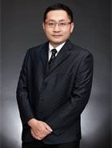

创始人

实验室创始人。上海交通大学副研究员，硕士生导师；厦门市为纳光电有限公司技术带头人。获得中科院半导体所博士学位，韩国高等科学技术研究院博士后。2008年加入上海交通大学电子系TFT-LCD关键材料与技术国家工程实验室，2014年入选厦门市双百创业领军人才，从事纳米光学膜的量产开发和应用，主要研究内容包括：偏振变色膜、显示膜、新型光学触控和绿色照明系统；纳米光学膜的大规模加工技术，并且防蓝光技术获得日内瓦发明展金奖。承担国家自然科学基金项目、教育部和企业技术攻关多项，参与自然基金面上、重点和“973”项目多项。至今，发表SCI文章30余篇、国际会议口头报告10余篇，授权国家发明专利16项，其中产业化转让10项，目前为国家自然基金网评专家，美国光学协会OSA和电子信息与电子工程师协会IEEE会员，并担任多个国际期刊的审稿专家。